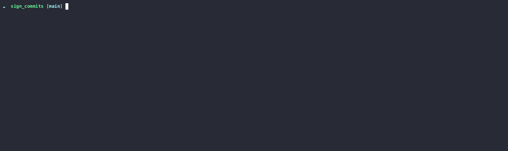

Git - how and why sign commits
abstract
You should always sign your git commits. Why?
Why to sign commits
The git commits are super easy referenced to a user. Anyone all around the world is able to push commits with another name. The reference is done in the commit message with the user.email.
You can try yourself. Just create a new repository in a folder of your choice.
Let's create locally a git repository.
mkdir sign_commits
cd sign_commits
git init
First lets check our current global settings
$ git config --global user.email
jane.doe@world.universe
and compare them with our local git repo settings
git config user.email
Those are the same. Now lets change the local git repo settings
git config user.email 'john.doe@example.dev'
Remark You can also use git config <--global> --edit to edit all configuration values in editor
Lets now check the current settings and compare them to the global settings.
git config user.email
git config --global user.email
You can see that those differ. This does not give us any value for our current context, but I wanted to make sure that we do not touch our global settings.
Now lets create a commit and check the history.
echo "# git sign commits" >> README.md
git add .
git commit -m "doc(): add some super nice docs"
git log
Now lets change the user name and the mail and lets do another commit.
git config user.email 'fake.me@fake.me'
git config user.name 'fake me'
echo "if the account exists e.q. on github.com the commit will be assigned to that person" >> README.md
git add .
git commit -m "doc(): add some super nice docs"
git log

You can see that the second commit is assigned to fake me with mail address fake.me@fake.me. If you are using github.com as your git provider and push the commit and also the mail address fake.me@fake.me is registered to an existing user, the commit will be assigned to that user.
As you can see it is super easy to make commits in names of other persons. Like an example? Here is a prank of a fake Linus Torvalds stating that linux is deleted.
As you can imagine there are not only pranks. This is a security issue. Imagine you are working in a team on a open source project on github. A teammate (who is a fake) is opening a pull request. You know that the original team mate is a great coder and you don't check in detail the changes and merge them into your main branch. This is obviously an attack vector. How to prevent? start signing your commits today
How to sign commits
It is possible to sign git commits with GPG. First lets revert our fake changes.
git config --user.name 'john doe'
git config --user.email 'john.doe@example.dev'
Now we need to create a gpg key
gpg --gen-key
Follow the Dialog nd save with O. Now lets grab the Key-id and add it to the git config
gpg --list-key $(git config user.email)
git config [--global] user.signingkey <key_id>
Now you are able to sign your commits with the -S flag or you add it to the git settings to make it default behaviour.
git config [--global] commit.gpgsign true
Now lets check what has changed. We first create a signed commit and check the signature.
echo "now the commits are signed" >> README.md
git add .
git commit -S -m "doc(): now with signed commit :star:"
git log --show-signatur
You should now also add the key to your git provider settings so that the git provider will verify the signature.
Further readings